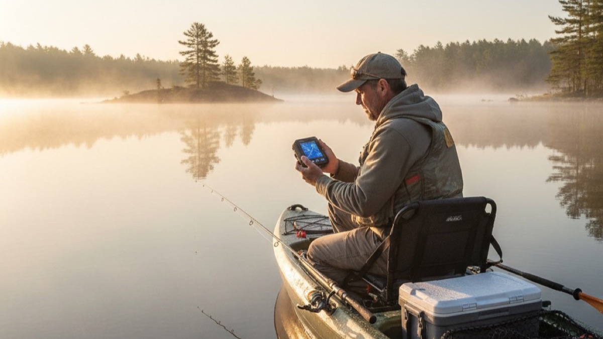

Best Fish Finders Under $200: Five Worth Buying (and a Few to Avoid)

Humminbird Helix 5 G2
If you can stretch to about $190, buy the Helix 5. The screen is better than everything else here, the GPS is actually useful, and it won’t feel like a throwaway purchase next season.
| Product | Price | Best For |
|---|---|---|
| ~$170–190 | Best screen + features if you can stretch to $200 | |
| ~$100–130 | Shore fishing, kayak anglers using a phone | |
| ~$100–120 | First boat mount, dead-simple setup | |
| ~$150–180 | Ice fishing, shore casting, advanced castable | |
| ~$40–60 | Beginners, pier fishing, testing the concept |
If you can spend $190, buy the Humminbird Helix 5 G2. That’s the answer for most anglers shopping this range. The screen is big enough to read in hard sun, the GPS is worth having, and it won’t feel obsolete the first time you fish a new lake and wish you had waypoints.
If your budget stops at $120, the Lowrance Hook2 4x is the clean fallback. If you fish from shore or a kayak and don’t want to mount anything, get the Garmin Striker Cast. Everything else is a tradeoff you should understand before you click.
What Actually Matters Under $200
Three things decide whether a cheap fish finder helps you or frustrates you: screen quality, sonar honesty, and whether the form factor matches how you fish.
Screen quality is the first separator. A 4-inch screen can work. A bad 4-inch screen becomes guesswork when the sun is overhead. That’s the main reason the Helix 5 beats the Hook2. You don’t have to squint as hard, and that matters when you’re trying to separate fish from clutter in 20 feet of water.
Sonar honesty matters more than fancy language on the box. Under $200, you’re not buying miracle detail. You’re buying a unit that tells the truth about depth, bottom contour, and whether fish are there at all. The garbage units fail here. They’ll give you numbers, but not numbers you should trust.
Form factor is the trap most buyers miss. A castable unit like the Garmin Striker Cast or Deeper Pro+ is great from shore, a dock, or an ice hole. It is not a replacement for a mounted unit on a boat. If you troll or move often, buy mounted. If you fish on foot, buy castable.
At-a-glance value scores
Scores reflect a mix of screen usability, sonar reliability, feature value, and how quickly the unit gets annoying in real use.
Garmin Striker Cast — Best for Shore Anglers and Kayak Fishing
The Garmin Striker Cast makes sense if you fish water you can’t rig permanently. Cast it out, scan the spot, then decide whether it’s worth working.

Key specs: Phone display · CHIRP sonar · GPS on upgraded version · rechargeable battery · about 10 hours of runtime.
- Actually useful from shore
- Good target separation for a castable
- No permanent install required
- Depends completely on your phone
- Less useful while moving
- Connection stability varies by device
Who it’s for: Shore anglers, kayak anglers, and dock fishermen who want real sonar without drilling holes in a hull.
Check Price at AmazonLowrance Hook2 4x — Best Entry-Level Boat Mount
The Hook2 4x is the right answer for a hard-capped budget. It’s simple, readable enough, and doesn’t waste your time with menu clutter.

Key specs: 4-inch display · 83/200 kHz dual frequency · no GPS on base model · 12V power · skimmer transducer included.
- Easy setup
- Good starter sonar for small boats
- Dual frequency is useful at this price
- Screen is only okay in bright sun
- No GPS on the cheap version
- Feels basic the longer you own it
Who it’s for: Jon boat and aluminum boat owners who need a first mounted unit and don’t want to spend Helix money.
Check Price at AmazonHumminbird Helix 5 G2 — Best Buy for Most Anglers
If you don’t want to shop this category twice, get the Helix 5 G2. This is the one that stops feeling “budget” and starts feeling like a real tool.

Key specs: 5-inch 800×480 display · dual frequency sonar · built-in GPS and chart plotting · 12V power · transducer included.
- Best screen in this group
- GPS is genuinely useful
- Enough room to grow into
- Costs more than the obvious budget picks
- Menu system takes a little learning
- Transducer placement matters on faster hulls
Who it’s for: Bass, walleye, and multi-species anglers who fish more than a few weekends a year and want one unit they won’t resent buying later.
Check Price at AmazonDeeper Pro+ — Best Castable for Ice Fishing and Mapping
The Deeper Pro+ is the castable to buy if mapping matters. If mapping doesn’t matter, it’s harder to justify over the Garmin.

Key specs: Phone display · dual-beam sonar · built-in GPS · rechargeable battery · up to 260-foot depth range.
- Strong option for ice fishing
- GPS mapping is the real differentiator
- Good depth range
- Battery life is shorter than you want
- Costs more than the Garmin
- Only worth it if you use the mapping
Who it’s for: Anglers fishing the same water repeatedly who’ll benefit from building their own depth maps, especially through the ice.
Check Price at AmazonEyoyo Portable — Best Ultra-Budget Option
The Eyoyo Portable is not sophisticated, but it clears the only bar that matters at this price: it can tell a beginner whether there’s life below the dock.

Key specs: 3.5-inch display · 200 kHz sonar · no GPS · AA batteries · wired float transducer.
- Cheap enough to try sonar without commitment
- No app or pairing nonsense
- Fine for docks, piers, and basic ice use
- Screen is weak in bright light
- Single-frequency sonar is limited
- You will outgrow it fast
Who it’s for: First-time buyers, casual dock anglers, and anyone who needs the cheapest usable option instead of the cheapest option, period.
Check Price at AmazonSkip the random no-name units under $30. The issue isn’t that they lack features. The issue is that they lie. If depth readings drift and fish marks aren’t trustworthy, the whole point of owning sonar disappears.
The Venterior-style bargain units look fine on a spec list, but shallow-water accuracy is where they usually fall apart. That’s exactly where new anglers need the most help.
Make the simple call
If you can afford it, buy the Humminbird Helix 5 G2. It gives you the clearest screen, the most useful feature set, and the best chance you won’t be shopping for another fish finder a year from now.
If you fish from shore, buy the Garmin Striker Cast instead. That’s the cleanest decision path in this category.
FAQ
- Do cheap fish finders actually help you catch more fish?
- They help you waste less time. A good budget unit won’t magically make fish bite, but it will tell you whether there’s depth, structure, and life below you before you spend an hour on dead water. That alone is worth the money if you fish unfamiliar lakes.
- Is GPS worth paying for on a fish finder under $200?
- Usually yes. GPS is what turns one good morning into repeatable information. If you mark a productive brush pile or drop-off once, you can come back to it in wind, low light, or a different season. That’s why the Helix 5 earns the recommendation.
- Should I buy a castable fish finder or a mounted one?
- Buy castable if you fish from shore, a dock, or a kayak without permanent rigging. Buy mounted if you fish from a boat and move while scanning. The mistake is treating them like they do the same job. They don’t.
- What’s the best fish finder under $200 for most anglers?
- For most anglers, it’s the Humminbird Helix 5 G2. If your budget is tighter or you fish from shore, the answer changes. But for the broad middle of buyers, that’s the best use of the money.
How we evaluate fish finders
We score budget fish finders on four things: screen readability in daylight, sonar reliability in common freshwater depths, feature value relative to price, and how well the unit matches real fishing scenarios like shore casting, kayak use, jon boat mounting, and repeat-lake waypointing.

Fishing Tribune Staff
We review fishing gear for anglers who want specifics, not padded praise.